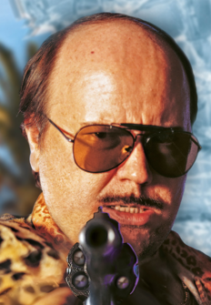

|
Torrente, nacio en Madrid. Es un expolicia que fue expulsado pero negado a aceptarlo decide trabajar por cuenta propia. |
 |
|
Experiencia laboral📃 - Policía Nacional (retirado)👮: Torrente fue agente del cuerpo de Policía Nacional, aunque fue expulsado por su comportamiento corrupto, negligente y poco ético. A pesar de ello, sigue patrullando por su cuenta como si aún perteneciera al cuerpo.💰 - Detective privado🕵: Tras su expulsión, se autoproclama investigador privado, aunque sus métodos son chapuceros y muchas veces ilegales. A menudo se involucra en casos que terminan en desastre o enredados con mafias y criminales. - Guardaespaldas: En algunas entregas de la saga, trabaja como guardaespaldas, aunque con resultados cuestionables debido a su ineptitud y falta de profesionalismo. - Veterano de guerra: Se menciona que participó en la campaña del Sáhara como legionario, lo que le dejó secuelas psicológicas y un trastorno de estrés postraumático, que influye en su comportamiento errático. - Otros “trabajos”: A lo largo de las películas, Torrente se involucra en actividades como chantajes, estafas menores y colaboraciones con delincuentes, todo con el objetivo de sobrevivir económicamente. |
idiomas
|
El personaje fue creado e interpretado por Santiago Segura y protagoniza cinco películas: Torrente, el brazo tonto de la ley (1998), Torrente 2: Misión en Marbella, Torrente 3: El protector, Torrente 4: Lethal Crisis y Torrente 5: Operación Eurovegas. Su perfil caricaturesco y políticamente incorrecto lo convirtió en un fenómeno de la comedia española.
| pelicula | duracion | año salida |
| Torrente, el brazo tonto de la ley | 1h 37m | 1998 |
| Torrente, misión en marbella | 1h 39m | 2001 |
| Torrente, el protector | 1h 37m | 2005 |
| Torrente, crisis letal | 1h 33m | 2011 |
| Torrente, misión eurovegas | 1h 45m | 2014 |
| Torrente 6 | En proceso de grabación | |
Otros títulos